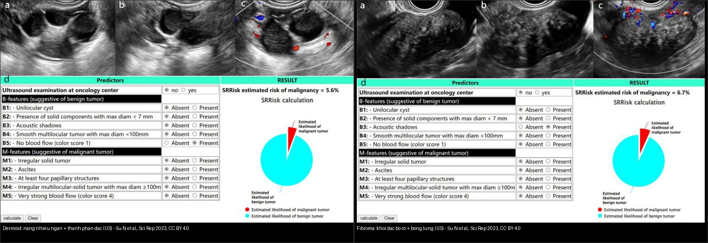
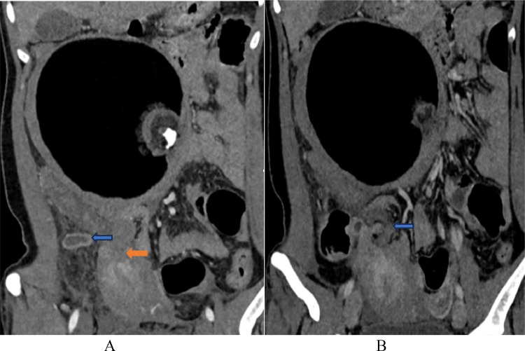
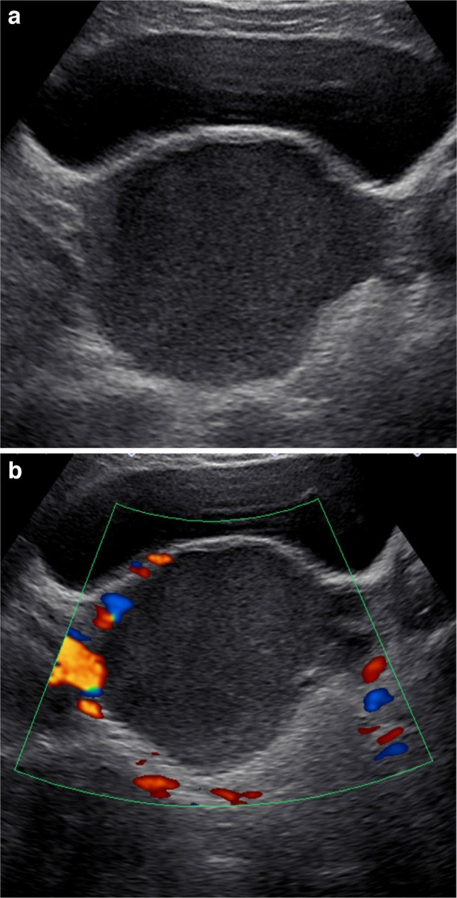
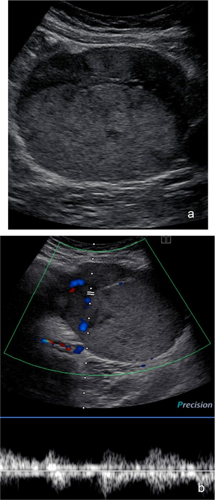
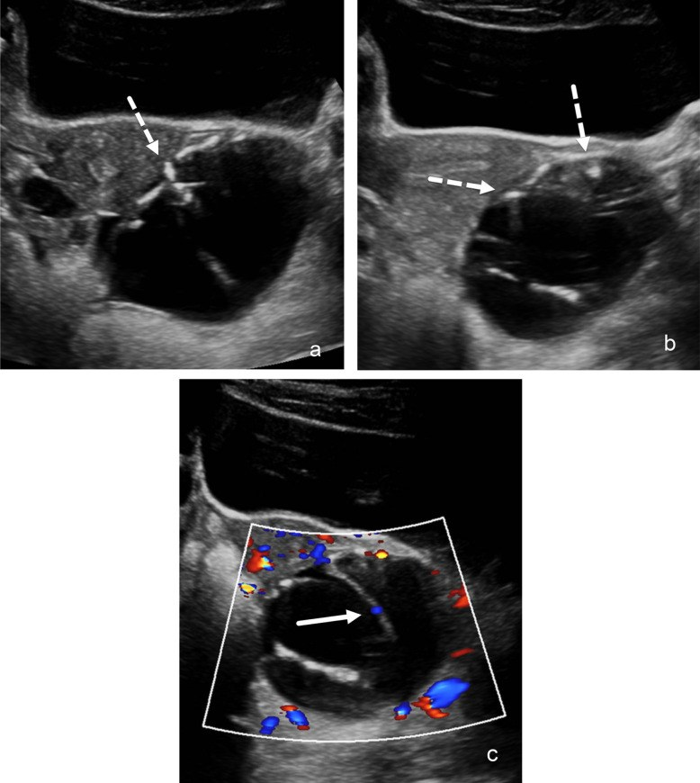
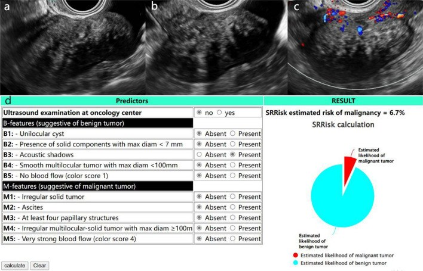
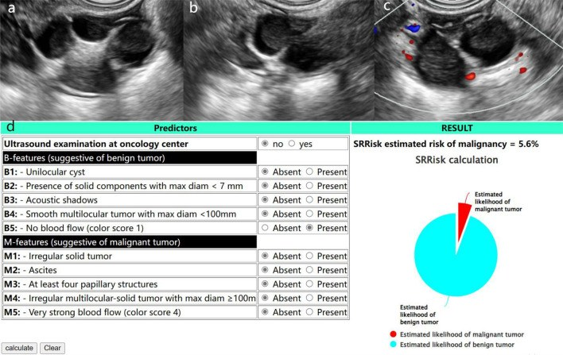
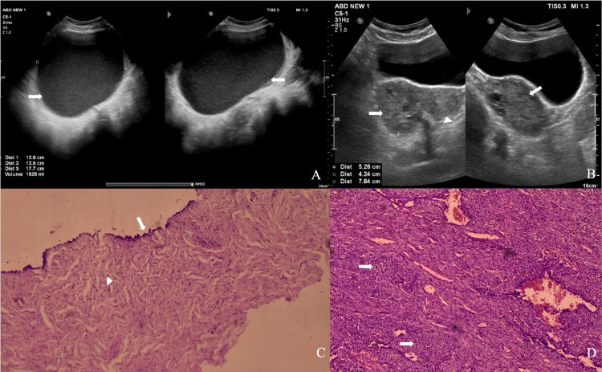

530 — Phần phụ: O-RADS US/MRI, dermoid, endometrioma, fibroma & xoắn / Adnexal O-RADS
Tags: pattern:khoi-buong-trung pattern:u-quai pattern:u-vong-mac vung:buong-trung score:O-RADS protocol:MRI-chau protocol:sieu-am-dau-do
Mức chắc chắn (certainty): tổng hợp y văn (literature synthesis) — nhóm tự biên từ y văn mở (Europe PMC/PMC: Sci Rep, Pediatr Radiol, Cureus, Radiol Case Rep) + các ca minh họa có giấy phép; không phải ca nguyên văn đơn lẻ.
1. Tổng quan — T1 fat-sat là công tắc mỡ–máu + T2/DWI đen là xơ lành + "O-RADS là xác suất, không phải chẩn đoán"
- Câu hỏi đầu tiên với mọi khối phần phụ: khối nang hay đặc? có thành phần đặc không? có chồi (papillary projection) không? có tưới máu (color score) không? — trả lời bằng siêu âm đầu dò (transvaginal) + Doppler trước, rồi xếp O-RADS US v2022.
- TẠI SAO T1 fat-sat là "công tắc" đầu tiên (vật lý): mỡ đại thể (dermoid) chứa proton trong chuỗi béo → sáng trên T1W nhưng MẤT tín hiệu khi fat-sat; máu cũ (methemoglobin — endometrioma) vẫn sáng trên T1 fat-sat; nhầy đặc cũng vẫn sáng. Vậy T1 fat-sat quyết định "mỡ hay máu" — đây là phân nhánh gốc của mọi gamut khối phần phụ.
- TẠI SAO endometrioma có "T2 shading" (sáng→tối như bóng đổ): máu cũ nhiều đợt chứa hemosiderin + protein cô đặc làm rút ngắn T2 (thời gian T2 rất ngắn) → phần dưới của nang tối dần. Đây là dấu hiệu gần như đặc trưng.
- TẠI SAO fibroma "tối đen" cả T2 và DWI dù siêu âm giống ung thư: mô xơ nghèo proton tự do (collagen đặc, ít nước) → T2 tối + ADC thấp trên DWI nhưng là lành (O-RADS 2). Bẫy kinh điển: siêu âm thấy khối đặc bóng lưng tưởng ung thư → mổ rộng oan.
- Ngưỡng định lượng (O-RADS US v2022): O-RADS 1 = bình thường/sinh lý; 2 = gần chắc lành (< 1%); 3 = nguy cơ thấp (1–< 10%); 4 = trung bình (10–< 50%); 5 = cao (≥ 50%). Phân độ O-RADS MRI dùng DCE (Type I/II/III) + T2 + DWI.
- Hiệu năng thực tế (định lượng): O-RADS US v2022 AUC 0,970 (KTC 95% 0,938–0,988); tỷ lệ ác tính theo nhóm trên 1 loạt 218 khối: O-RADS 2 = 0%, O-RADS 3 = 0%, O-RADS 4 = 46,2% (v2022)/36% (v1), O-RADS 5 = 94,4% → O-RADS ≤ 3 gần như đồng nghĩa lành, O-RADS 4–5 mới là nhóm cần can thiệp.
- Xoắn phần phụ (adnexal torsion): ngưỡng kinh điển > 4–5 cm / > 20 mL; dấu cuống xoắn (whirlpool sign) + chuỗi ngọc (string of pearls) trên siêu âm; Doppler còn dòng máu KHÔNG loại trừ xoắn (máu vẫn chảy qua tĩnh mạch kép/không tắc), càng không được chờ mất mạch — xoắn là mổ cấp cứu.
- Vì sao quan trọng: phân biệt lành/ác quyết định theo dõi vs mổ, mà phần lớn khối phần phụ là lành (dermoid, endometrioma, nang sinh lý, fibroma). Điểm mấu chốt là tránh mổ oan cho khối lành và không bỏ sót O-RADS 4–5.
2. Mẫu hình + chẩn đoán phân biệt theo O-RADS (Gamut)
- O-RADS 2 (gần chắc lành, < 1%): nang đơn thuần (simple cyst) — một ngăn, thành mỏng nhẵn, dịch trong, không thành phần đặc, không dòng máu; dermoid điển hình; endometrioma điển hình; nang xuất huyết điển hình (lưới ren); kén cạnh buồng trứng/paraovarian cyst; giãn vòi (hydrosalpinx).
- O-RADS 3 (nguy cơ thấp, 1–< 10%): khối lớn (≥ 10 cm) của các dạng điển hình trên; nang một ngăn thành dày nhẵn; nang có thành phần đặc < 3 mm; nang nhiều ngăn không-có đặc kích thước lớn.
- O-RADS 4 (trung bình, 10–< 50%): khối đặc nhẵn có tưới máu (color score 2–3); nang nhiều ngăn + thành phần đặc; chồi (papillary projection) ≤ 3; dịch kèm nhưng chưa có nốt phúc mạc.
- O-RADS 5 (cao, ≥ 50%): khối đặc bờ không đều; ≥ 4 chồi; mô đặc với dòng máu mạnh (color score 4); báng + nốt/tổn thương phúc mạc → chuyển ung bướu phụ khoa (
535). - Khuôn hỗn hợp điển hình: nang + chồi → u giáp biên/ung thư (
537/535); khối đặc + mỡ + vôi → dermoid trưởng thành/u quái. - Gamut theo chất chứa trong nang (bộ lọc MRI): mỡ (mất T1 fat-sat) → dermoid; máu cũ (T1 sáng + T2 shading) → endometrioma; nhầy (T2 rất sáng, T1 tối-hoặc-sáng, không mất fat-sat) → u nhầy (
537/539); dịch trong (T2 sáng, T1 tối hoàn toàn) → nang sinh lý/đơn thuần. - Mimic cần loại: ung thư buồng trứng xâm lấn (
535), u giáp biên (537), xoắn (khối đau cấp), áp-xe vòi–buồng trứng (đau + sốt), thai ngoài tử cung (550), u xơ dưới thanh mạc tử cung (đặc, T2 tối, ít ngấm).
3. Bảng so sánh phân biệt (ma trận đối chiếu)
| Thực thể (entity) | Hình ảnh điển hình (US/CT/MRI theo thì) | Chốt vào (rule-in) | Chốt loại (rule-out) | Gợi ý xác nhận |
|---|---|---|---|---|
| Dermoid (u quái trưởng thành) | Nang mỡ + vôi + nốt Rokitansky; US có dải tăng âm + bóng lưng lấm tấm; CT −40 đến −120 HU (mỡ) + > 100 HU (vôi) | Mỡ mất tín hiệu T1 fat-sat + lưới tóc/nốt Rokitansky | T1 còn sáng sau fat-sat → máu (endometrioma) | US/CT/MRI đặc trưng; bóc khi ≥ 6–10 cm hoặc gây xoắn |
| Endometrioma | T1 sáng + T2 shading + dịch kính mờ, thường < 10 cm | Shading + fat-sat vẫn sáng (máu cũ) | Mất fat-sat → dermoid | MRI T1 fat-sat; bối cảnh đau/khó có con; phối hợp 540 |
| Fibroma | Khối đặc bờ rõ + bóng lưng (acoustic shadowing) trên US; T2 tối + DWI/ADC tối | Đen cả T2 và DWI + bóng lưng = xơ lành (O-RADS 2) | Ngấm mạnh Type III + không bóng lưng → ung thư | US + MRI (đừng gọi ung thư); hội chứng Meigs: u xơ + báng + tràn dịch màng phổi |
| Nang xuất huyết (hemorrhagic cyst) | US lưới ren (lace-like/reticular) + không dòng máu; tự teo sau 6–8 tuần | Lưới ren + teo theo thời gian | Kính mờ + shading + tồn tại → endometrioma | Siêu âm lại 6–8 tuần |
U giáp biên / ung thư (537/535) |
Nang + NHÚ tưới máu, nhiều ngăn "tổ ong", hoặc mô đặc ưu thế + báng + cấy/hạch | Chồi mạch hóa ≥ 4 / mô đặc ngấm mạnh / báng + nốt phúc mạc | Nang trơn không chồi, O-RADS ≤ 3 → theo dõi | O-RADS 4–5 → MRI + mô học; CA-125/HE4 |
| Xoắn phần phụ | Phần phụ to, phù, đẩy trung tâm, whirlpool sign, không/giảm dòng máu | Cuống xoắn + đau cấp (Doppler còn vẫn xoắn!) | Chuỗi ngọc + không dòng → nghi xoắn nặng | Mổ nội soi tháo xoắn cấp cứu |
| Nang sinh lý/cạnh buồng trứng | Nang trong, thành mỏng, một ngăn, ≤ 3 cm (follicle/corpus luteum), đơn độc | Nang trong đơn độc + thay đổi theo chu kỳ | Thành dày/đặc/chồi → không phải nang sinh lý | Siêu âm chu kỳ sau |

Trái: dermoid — nang nhiều ngăn có thành phần đặc, kèm thang điểm SRRisk (ước ~5,6%). Phải: fibroma — khối đặc bờ rõ, bóng lưng, SRRisk ~6,7% (nhưng MRI tối cả T2/DWI mới chốt lành). Nguồn: Su N et al., Sci Rep 2023, Fig. 3–4, CC BY 4.0 (ảnh ghép letterbox).Dấu hiệu "chốt" khi đọc khối phần phụ
- Color score: không dòng (1) → rất lành; dòng mạnh (4) → O-RADS 5. Đây là biến số đẩy phân độ.
- Bóng lưng (acoustic shadowing): nghĩ mô xơ (fibroma/Brenner) — không mặc định ung thư; nhưng vẫn phải MRI nếu là khối đặc.
- Nốt Rokitansky (dermoid): cục mỡ–tóc–răng nổi trong lòng nang → gần như chẩn đoán xác định.
4. Protocol chụp + O-RADS US/MRI + phân độ xoắn (flowchart)
- Siêu âm đầu tay (transvaginal ± transabdominal), bắt buộc Doppler: mô tả theo từ vựng O-RADS US v2022 — số ngăn, vách, thành phần đặc (mm), chồi (đếm + đo mm), color score 1–4, bóng lưng, dịch kèm; xếp O-RADS 1–5.
- MRI chậu (khối không kết luận được / O-RADS 4–5 / nghi ung thư): T2W 3 mặt phẳng + T1W + T1W fat-sat + DWI/ADC + DCE → đối chiếu O-RADS MRI. Chốt: T1 fat-sat (mỡ vs máu), T2 tối + DWI tối (xơ lành), DCE Type I/II/III (động học ngấm).
- CT bụng–chậu có cản quang: không phải đầu tay cho khối lành; dùng khi chấn thương/xoắn cấp (ca CT dưới), phân giai đoạn, tìm di căn/phúc mạc.
- Dấu ấn: CA-125 (biểu mô/ung thư phúc mạc), HE4, CA19-9 (nhầy); dùng bổ trợ, không tự mình chốt lành–ác (đặc biệt ở tiền mãn kinh có thể tăng theo chu kỳ/lạc nội mạc).
- Xử trí theo O-RADS: ≤ 3 → theo dõi; 4 → MRI/chuyển khám chuyên khoa; 5 → chuyển ung bướu phụ khoa (
535). Xoắn luôn mổ cấp cứu bất kể phân độ.
flowchart TD
A[Khoi phan phu tren sieu am] --> B{Nang don thuan thanh mong, khong dac?}
B -->|Co| C[O-RADS 2: theo doi]
B -->|Khong| D{Co MO / luoi toc / noi Rokitansky?}
D -->|Co| E[Dermoid O-RADS 2: boc khi to/xoan]
D -->|Khong| F{T1 sang?}
F -->|Mat fat-sat| E
F -->|Con sang + T2 shading| G[Endometrioma O-RADS 2: noi khoa/theo doi]
F -->|Khoi dac bo ro + bong lung, T2-DWI toi| H[Fibroma O-RADS 2: xac nhan, mo chon]
F -->|Nang + CHOI tuoi mau / mo dac ngam| I[O-RADS 4-5: MRI + chuyen ung buou 535/537]
A --> J{Dau cap + cuong xoan whirlpool?}
J -->|Co| K[Xoan phan phu: MO CAP CUU - khong cho Doppler]
5. Biến thể bình thường và cạm bẫy
- Cạm bẫy "thỏa mãn tìm kiếm" (satisfaction of search): ca dưới — thấy nang bì xoắn rồi bỏ sót viêm ruột thừa cấp cùng hố chậu phải. Đau hố chậu ở nữ: luôn xem cả ruột thừa + phần phụ.
- Cạm bẫy "Doppler còn dòng = loại trừ xoắn": SAI — dòng máu còn (đặc biệt tĩnh mạch) không loại trừ xoắn. Whirlpool + đau cấp là chỉ định mổ, đừng chờ tới khi mất mạch (đã hoại tử).
- Cạm bẫy "fibroma = ung thư": khối đặc bóng lưng dễ bị gọi ung thư → mổ rộng oan. Tối cả T2 + DWI = xơ lành (O-RADS 2). Nhớ hội chứng Meigs (u xơ + báng + tràn dịch màng phổi) — vẫn lành.
- Cạm bẫy nang xuất huyết vs endometrioma: nang xuất huyết có lưới ren, không shading, và teo sau 6–8 tuần; endometrioma là kính mờ + shading + tồn tại. Đừng mổ nang xuất huyết (siêu âm lại sau 6–8 tuần).
- Cạm bẫy O-RADS ở TRẺ EM: malignancy rất hiếm → PPV chỉ 5–7%, đồng thuận giữa bác sĩ mức trung bình (κ = 0,42); dù Se/NPV 100% nhưng Sp 74–82% → đừng dùng O-RADS ở trẻ để quyết mổ; ưu tiên bảo tồn buồng trứng.
- Cạm bẫy "O-RADS = chẩn đoán": O-RADS là xác suất; nhóm 4 nằm giữa (vùng xám) — cần MRI/mô học, không tự mình chốt.
- Cạm bẫy "dermoid nhỏ không cần theo dõi": dermoid có thể xoắn/vỡ → theo dõi hoặc bóc khi to; ghi kích thước từng lần.
6. Tự lượng giá — Blind Quiz
Ca 1 — Nữ 39 tuổi đau hố chậu phải + sốt nhẹ. Đọc CT.

- Gợi ý lâm sàng (clinical context): đau hố chậu phải, sốt nhẹ.
- Câu hỏi: mấy bệnh cùng lúc? Dấu xoắn ở đâu? Mổ gì?
Bấm để hiện đáp án (findings + chẩn đoán)
- Dấu hiệu (findings): nang bì (mỡ + vôi + nốt Rokitansky) + cuống xoắn whirlpool + ruột thừa to viêm + dịch.
- Chẩn đoán (diagnosis): xoắn nang bì + viêm ruột thừa cấp cùng lúc — cắt phần phụ + cắt ruột thừa một thì (đừng thỏa mãn 1 bệnh!).
- Nguồn ảnh: Khatiwada A et al., Radiol Case Rep 2024, Fig. 1, CC BY-NC-ND 4.0 (giữ nguyên bản).
Ca 2 — Nữ 17 tuổi, siêu âm phần phụ. Đọc siêu âm.

- Hỏi: đặc điểm nào xếp khối này O-RADS 2? Cần mổ không?
Bấm để hiện đáp án (findings + chẩn đoán)
- Dấu hiệu (findings): (a) nang một ngăn, dịch trong, thành mỏng nhẵn, không thành phần đặc; (b) Doppler chỉ có mạch ở rìa/vỏ bình thường, không mạch trong nang.
- Chẩn đoán (diagnosis): nang đơn thuần/khối lành = O-RADS 2 (< 1%) → theo dõi, không mổ. Ở trẻ em O-RADS có Sp chỉ 74–82%, PPV 5–7% nên càng phải thận trọng, ưu tiên bảo tồn.
- Nguồn ảnh: Epstein K et al., Pediatr Radiol 2026, Fig. 2, CC BY 4.0.
Ca 3 — Nữ 10 tuổi, khối phần phụ phức tạp. Đọc siêu âm + Doppler.

- Hỏi: khối có thành phần đặc/tưới máu không? Xếp O-RADS nào? Vì sao vẫn thận trọng ở trẻ?
Bấm để hiện đáp án (findings + chẩn đoán)
- Dấu hiệu (findings): khối đặc–nang, có thành phần đặc và dòng máu trong tổn thương trên Doppler (kèm phổ); bờ/vách không hoàn toàn nhẵn.
- Chẩn đoán (diagnosis): khối đặc–nang có tưới máu = O-RADS 4–5 (nguy cơ 10–≥ 50%) — ở ca nhi này là dương tính thật theo 3 người đọc. Ở trẻ, PPV thấp nên cần hội chẩn + cân nhắc bảo tồn.
- Nguồn ảnh: Epstein K et al., Pediatr Radiol 2026, Fig. 3, CC BY 4.0.
Ca 4 — Nữ 16 tuổi, khối nhỏ có ổ tăng âm. Đọc siêu âm.

- Hỏi: dấu hiệu nào dễ bị đọc thành "u" (dương tính giả)? Bài học?
Bấm để hiện đáp án (findings + chẩn đoán)
- Dấu hiệu (findings): khối có ổ/tổn thương tăng âm (dashed arrow) gợi thành phần đặc; Doppler có mạch quanh tổn thương (mũi tên trắng) nhưng không phải chồi mạch hóa thật; 3 người đọc đều xếp sai (dương tính giả).
- Chẩn đoán (diagnosis): tổn thương lành bị đọc nhầm ác — ở trẻ, O-RADS có PPV 5–7% → cẩn thận dương tính giả; không mổ vì một dấu hiệu đơn độc, theo dõi/MRI khi phân vân.
- Nguồn ảnh: Epstein K et al., Pediatr Radiol 2026, Fig. 4, CC BY 4.0.
Ca 5 — Siêu âm khối phần phụ + tính điểm SRRisk. Đọc siêu âm.

- Hỏi: khối đặc bờ rõ có bóng lưng gợi gì? O-RADS nào? Xác nhận bằng gì?
Bấm để hiện đáp án (findings + chẩn đoán)
- Dấu hiệu (findings): (a, b) khối đặc, bờ rõ, có bóng lưng (acoustic shadowing); (c) Doppler ít mạch; thang điểm SRRisk ước 6,7% (đưa vào nhóm B-features "khối đặc nhẵn").
- Chẩn đoán (diagnosis): fibroma buồng trứng (O-RADS 2) — bóng lưng + mô xơ; xác nhận bằng MRI T2 tối/DWI tối; không gọi ung thư, không mổ rộng. (Nhớ hội chứng Meigs.)
- Nguồn ảnh: Su N et al., Sci Rep 2023, Fig. 3, CC BY 4.0.
Ca 6 — Siêu âm khối phần phụ có mỡ/tóc. Đọc siêu âm.

- Hỏi: cấu trúc "nang nhiều ngăn + thành phần đặc" gợi gì? Cần phân biệt với gì ở người trẻ?
Bấm để hiện đáp án (findings + chẩn đoán)
- Dấu hiệu (findings): (a, b) nang nhiều ngăn có thành phần đặc kèm ổ tăng âm (mỡ/tóc); (c) Doppler; SRRisk ước 5,6%.
- Chẩn đoán (diagnosis): u quái trưởng thành (dermoid) — xác nhận bằng CT/MRI thấy mỡ + vôi + nốt Rokitansky; phân biệt với u giáp biên/ung thư (
537/535) nếu có chồi mạch hóa. - Nguồn ảnh: Su N et al., Sci Rep 2023, Fig. 4, CC BY 4.0.
Ca 7 — Ảnh ghép: bên nào dermoid, bên nào fibroma?
- Hỏi: dấu hiệu nào tách hai bên? Bên nào cần MRI để "minh oan"?
Bấm để hiện đáp án (findings + chẩn đoán)
- Trái = dermoid: nang nhiều ngăn + thành phần đặc, ổ tăng âm (mỡ/tóc) → CT/MRI chốt mỡ + vôi + nốt Rokitansky.
- Phải = fibroma: khối đặc bờ rõ + bóng lưng → MRI T2 tối + DWI tối mới "minh oan" là xơ lành (O-RADS 2).
- Chốt: bóng lưng + đặc = nghĩ fibroma (đừng gọi ung thư); nang + mỡ/tóc = dermoid.
- Nguồn: Su N et al., Sci Rep 2023, Fig. 4 & 3, CC BY 4.0 (ảnh ghép letterbox).
Ca 8 — Siêu âm khối phần phụ + mô bệnh tương ứng. Đọc ảnh.

- Hỏi: bên nào là nang đơn thuần, bên nào là tổn thương phức tạp? Mô bệnh (C, D) cho thấy gì?
Bấm để hiện đáp án (findings + chẩn đoán)
- Dấu hiệu (findings): (A) nang một ngăn dịch trong (bờ nhẵn); (B) khối phức tạp có thành phần đặc/tổ chức (đo 5,56 × 5,02 cm); (C, D) mô bệnh tương ứng.
- Chẩn đoán (diagnosis): đối chiếu hình ảnh ↔ mô bệnh để học phân độ O-RADS — khối đơn thuần ↔ lành (O-RADS 2), khối phức tạp ↔ cần phân độ cao hơn; nhấn mạnh mô bệnh là tham chiếu vàng cho phân độ.
- Nguồn ảnh: Shankar SJ et al., Cureus 2026, Fig. 2, CC BY 4.0.
Bài liên quan chéo
- 500 – Tổng quan Vú & Sản phụ khoa
- 535 – Ung thư buồng trứng, phúc mạc & u Krukenberg
- 536 – U mầm & u mô đệm–dây sinh dục buồng trứng
- 537 – U buồng trứng giáp biên (borderline)
- 540 – Lạc nội mạc tử cung sâu (DIE) & viêm vùng chậu
- 160 – Bụng cấp tiêu hóa (ruột thừa vs phần phụ)
Ảnh
530_dermoid-xoan_CT_RCR-Khatiwada-CCBYNCND40.jpg,530_orads2-lanh_US_PMC13035678.jpg,530_orads3-4-dung_US_PMC13035678.jpg,530_duong-tinh-gia_US_PMC13035678.jpg,530_fibroma_US_PMC10514283.jpg,530_dermoid_US_PMC10514283.jpg,530_US-va-mo-ben_PMC13104537.jpg,composite_dermoid-vs-fibroma-US.jpg. Nguồn + giấy phép từng ảnh trongimages/CREDITS.md.
Không dùng để chẩn đoán độc lập khi chưa có người hướng dẫn.